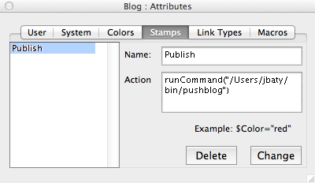
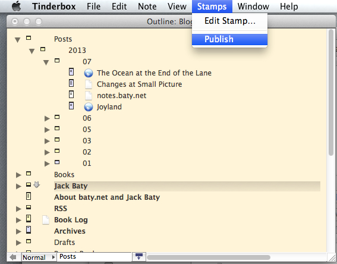

Easier publishing of my Tinderbox blog
Saturday, 27 July 2013
I sometimes forget that Tinderbox can do everything. I was shuffling some things around here today and that means repeatedly needing to push the changes out to the server. This normally consists of exporting the HTML out of Tinderbox and switching to Terminal to run rsync. I have a tiny shell script called "pushblog" which runs rsync with all of the correct switches, etc.
It dawned on my that I could run the pushblog script directly using Tinderbox's "runCommand()". I created a Stamp that looked like this...
Then, whenever I want to sync my local site files to the server I just use Stamps->Publish.
No more switching to a terminal to run it via command line. It's a small thing, but small things add up.